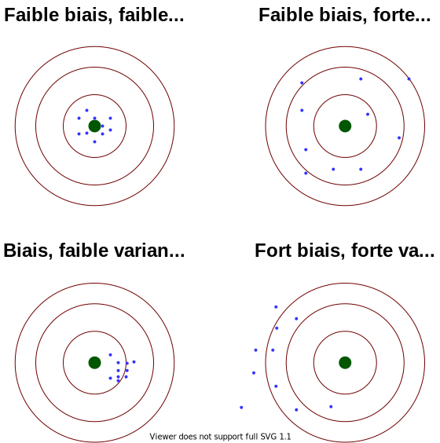

Atelier du réseau sondage
Estimation de la variance par approche analytique - application avec gustave
20 juin 2024
Pourquoi estimer la variance d’un estimateur ?
Pourquoi ?
La variance permet de quantifier la variabilité d’un estimateur.
Certaines enquêtes de l’Insee sont soumises à un cadre réglementaire européen, qui leur impose entre autres des niveaux de précision cibles pour quelques indicateurs.
Le calcul de précision tend, de fait, à prendre une part de plus en plus importante dans la production de statistiques publiques.
Tout calcul de précision doit prendre en compte différents éléments :
- Le plan de sondage retenu.
- Le choix de l’estimateur initial.
- Les différentes étapes de redressements : correction de la non-réponse, partage des poids, calage …
Intérêt des calculs de variance
- Pour le chargé d’études :
- Permet la construction d’un intervalle de confiance
- Permet de commenter la significativité des variations d’un indicateur
- L’estimation de variance permet de mesurer la qualité des indicateurs produits :
- Utilisée pour les rapports qualité transmis à Eurostat
- Requise pour divers indicateurs dans différentes enquêtes par le règlement IESS
- L’estimation de variance gagne en importance dans le processus de production des enquêtes
Le règlement cadre IESS
- Le règlement-cadre IESS (Integrated European Social Statistics) a été adopté en avril 2019.
- Il vise à imposer un cadre européen harmonisé afin de garantir la comparabilité des indicateurs entre pays des États membres.
- L’Insee a mis en place un programme de rénovation progressive de ses enquêtes sociales, avec une part grandissante sous règlement européen.
- Contraintes sur les écarts-types d’estimateurs nationaux et régionaux (au niveau des NUTS 2 : anciennes régions pour la France).
- Les estimateurs concernés sont toujours des taux.
- Les contraintes de précision dépendent des tailles de population : contraintes moins strictes pour les petites régions (points 6 et 7 de l’annexe II).
- Hormis pour quelques exceptions, l’écart-type estimé des estimateurs ne doit pas excéder \(\sqrt{\frac{\widehat{p}(1-\widehat{p})}{a\sqrt{N}+b}}\) où \(\widehat{p}\) est l’estimateur considéré, \(a\) et \(b\) sont des paramètres fixés par IESS et \(N\) est un nombre d’individus ou de ménages liés à l’indicateur.
- Les contraintes de précision régionales sont plus contraignantes pour les régions plus peuplées.
Le règlement FRIBS
- Il existe également un règlement-cadre européen sur les statistiques d’entreprises, nommé FRIBS (Framework Regulation Integrating Business Statistics) et adopté en 2019.
- FRIBS remplace dix règlements sectoriels en vigueur jusqu’en 2021.
- Il crée un cadre juridique commun pour les statistiques d’entreprises, réduisant les incohérences entre domaines et les redondances, sans les supprimer totalement.
- FRIBS s’applique pour l’essentiel à partir de l’année de référence 2021.
Estimation de variance simple
Définitions usuelles et notations.
Dans cette présentation, on notera :
- \(\mathcal{U}\), une population finie de taille \(N\),
- \(p\), un plan de sondage défini sur \(\mathcal{U}\),
- \(S\) un échantillon aléatoire tiré selon le plan \(p\).
- \(\{y_k\}\) : une variable d’intérêt,
- \(\{x_k\}\) : une variable auxiliaire.
Pour l’inférence, il est commode d’introduire :
- Pour tout individu \(k \in \mathcal{U}, ~ \pi_k = \mathbb{P}(k \in S)\) \(\to\) probabilité d’inclusion d’ordre 1.
- Il s’agit de la probabilité que l’individu \(k\) soit dans l’échantillon \(S\).
- Pour tout couple d’individus \((k,l) \in \mathcal{U}^2, ~ \pi_{kl} = \mathbb{P}(k \in S \cap l \in S)\) \(\to\) probabilité d’inclusion d’ordre 2.
- Il s’agit de la probabilité que les individus \(k\) et \(l\) soient conjointement dans l’échantillon \(S\).
Estimateur d’Horvitz-Thompson
- Comment estimer le total \(\displaystyle t_y = \sum_{k \in \mathcal{U}} y_k\) en utilisant l’information disponible uniquement sur l’échantillon \(S\) ?
- L’estimateur \(\displaystyle \hat{t}_{y,\text{HT}} = \sum_{k \in S} \frac{y_k}{\pi_k}\) est appelé estimateur d’Hovitz-Thompson du total.
- Est-ce un bon estimateur ?
- Critère de biais et de variance.
Mise en garde
Définition 1 (Biais d’un estimateur) Le biais d’un estimateur \(\hat{\theta}\) d’une fonction d’intérêt \(\theta\) est donné par \(\mathbb{B}(\hat{\theta}; \theta) = \mathbb{E}(\hat{\theta}) - \theta\).
Mise en garde
Définition 2 (Variance) La variance d’un estimateur \(\hat \theta\) d’une fonction d’intérêt \(\theta\) est donné par \(\mathbb{V}(\hat \theta) = \mathbb{E}(\left(\hat \theta - \mathbb{E}(\hat \theta) \right)^2)\).
La variance permet de quantifier la variabilité d’un estimateur.
Arbitrage biais/variance
Estimateur d’Horvitz-Thompson : biais et variance
- Si pour tout \(k \in \mathcal{U},~~ \pi_k > 0\) alors \(\hat{t}_{y,\text{HT}}\) est un estimateur sans biais de \(t_y\).
- S’il existe un individu \(j\) tel que \(\pi_j = 0\), alors il y a un défaut de couverture \(\to\) biais.
- Quid de la variance de \(\hat{t}_{y,\text{HT}}\) ?
- \[\mathbb{V}(\hat t_{y,\text{HT}}) = \sum_{k \in \color{red}{\mathcal{U}}} \sum_{l \in \color{red}{\mathcal{U}}} \frac{y_k}{\pi_k} \frac{y_l}{\pi_l} \Delta_{kl}\] où \(\Delta_{kl} = \pi_{kl} - \pi_k \pi_l\)
- Problème : la variance est fonction des valeurs de \(\{y_k\}\) sur \(\color{red}{\mathcal{U}}\) mais cette information n’est disponible que sur \(\mathcal{S}\).
- Solution : estimer la variance.
Estimateur de variance d’Horvitz-Thompson
\[\hat{\mathbb{V}}_\text{HT}(\hat t_{y,\text{HT}}) = \sum_{k \in \mathcal{U}} \sum_{k \in \mathcal{U}} \frac{y_k}{\pi_k} \frac{y_l}{\pi_l} \Delta_{kl} \color{red}{\frac{I_{kl}}{\pi_{kl}}} \color{black} = \sum_{k \in S} \sum_{l \in S} \frac{y_k}{\pi_k} \frac{y_l}{\pi_l} {\frac{\Delta_{kl}}{\pi_{kl}}} \]
Propriétés :
- Si pour tout \((k,l) \in \mathcal{U}^2\), \(\pi_{kl} > 0\), \(\hat{\mathbb{V}}_\text{HT}(\hat t_{y,\text{HT}})\) est sans biais pour \(\mathbb{V}(\hat t_{y,\text{HT}})\)
Estimateur de Sen-Yates-Grundy
\[\hat{\mathbb{V}}_\text{SYG}(\hat t_{y,\text{HT}}) = - \frac{1}{2} \sum_{k \in \mathcal{S}} \sum_{l \in \mathcal{S} | k \neq l} \left(\frac{y_k}{\pi_k} - \frac{y_l}{\pi_l} \right)^2 \frac{\Delta_{kl}}{\pi_{kl}}\]
Propriétés :
- Si pour tout \((k,l) \in \mathcal{U}^2\), \(\pi_{kl} > 0\) et le plan \(p\) est de taille fixe alors \(\hat{\mathbb{V}}_\text{SYG}(\hat t_{y,\text{HT}})\) est sans biais pour \(\mathbb{V}(\hat t_{y,\text{HT}})\).
- Si pour tout \((k,l) \in \mathcal{U}^2\), \(\pi_{kl} - \pi_k \pi_l \leq 0\) alors \(\hat{\mathbb{V}}_\text{SYG}(\hat t_{y,\text{HT}}) \geq 0\).
Théorème central limite en sondage
Rappel sur le théorème central limite dans le cas i.i.d : Rappel
Est-ce que le théorème central limite est applicable en sondage sur l’estimateur d’Horvitz-Thompson ?
Par exemple : \[\frac{1}{\mathbb{V}^{\frac{1}{2}}(\hat t_{y,\text{HT}})}(\hat t_{y,\text{HT}} - t_y) \hookrightarrow \mathcal{N}(0,1) \] où \(\hookrightarrow\) désigne la convergence en loi
Théorème central limite en sondage
- En général, on supposera toujours que le théorème central limite tient : \[\frac{1}{\mathbb{V}^{\frac{1}{2}}(\hat t_{y,\text{HT}})}(\hat t_{y,\text{HT}} - t_y) \hookrightarrow \mathcal{N}(0,1) \]
- Un intervalle de confiance asymptotique au niveau \(1-\alpha\) est donné par : \[ [ \hat t_{y,\text{HT}} - q_{1 - \frac{\alpha}{2}} \color{red}{\mathbb{V}}^{\frac{1}{2}}(\hat t_{y,\text{HT}}), \hat t_{y,\text{HT}} + q_{1 - \frac{\alpha}{2}} \color{red}{\mathbb{V}}^{\frac{1}{2}}(\hat t_{y,\text{HT}}) ] \] avec \(q_{1 - \frac{\alpha}{2}}\), le quantile d’ordre \(1- \frac{\alpha}{2}\) de la loi normale centrée réduite
- Problème : \(\mathbb{V}(\hat t_{y,\text{HT}})\) pas connu mais … on peut utiliser un estimateur consistant de \(\hat{\mathbb{V}}(\hat t_{y,\text{HT}})\).
Lemme de Slustky
Si \((X_n,Y_n)_{n \in \mathbb{N}}\) tel que \(X_n \to^{\mathbb{P}} c\) (une constante) et \(Y_n \hookrightarrow Y\) alors \((X_n, Y_n) \hookrightarrow (X,Y)\).
\(\to\) Remplacement de \(\mathbb{V}(\hat t_{y,\text{HT}})\) par un estimateur \(\hat{\mathbb{V}}_\text{HT}(\hat t_{y,\text{HT}})\) ou \(\hat{\mathbb{V}}_\text{SYG}(\hat t_{y,\text{HT}})\) (si taille fixe).
Application au plan aléatoire simple sans remise
Plan aléatoire simple sans remise
\(p_{\text{SASSR}(n;N)}\) est un plan aléatoire simple sans remise de taille \(n\) parmi \(N\) si :
- Tous les échantillons de taille \(n\) ont la même probabilité d’être tiré,
- Si tous les échantillons de taille différente de \(n\) ont une probabilité nulle d’être tiré.
Si \(S \sim p_{\text{SASSR}(n;N)}\) alors pour tout \((k,l) \in \mathcal{U}^2, ~~ \pi_k = \frac{n}{N}\) et si \(k \neq l~~\), \(\pi_{kl} = \frac{n(n-1)}{N(N-1)}\)
Application : \(\hat{\mathbb{V}}_\text{SYG}(\hat t_{y,\text{HT}}) = \hat{\mathbb{V}}_\text{HT}(\hat t_{y,\text{HT}}) = \frac{N^2}{n} (1 - \frac{n}{N}) s^2_y\) où \(s^2_y\) est la dispersion de la variable \(\{y_k\}\) sur l’échantillon \(S\).
Application au plan poissonien
Plan poissonien
\(p_{\text{Poisson}(\textbf{p})}\) où \(\textbf{p} = (p_1, ..., p_N) \in [0;1]^N\) est un plan de Poisson si :
- Tous les individus sont tirés indépendamment les uns des autres,
- La probabilité d’un individu \(k\) soit dans l’échantillon est \(p_k\).
Si \(S \sim p_{\text{Poisson}(\textbf{p})}\) alors pour tout \((k,l) \in \mathcal{U}^2, ~~ \pi_k = \textbf{p}_k\) et si \(k \neq l~~\), \(\pi_{kl} = \textbf{p}_k \textbf{p}_l\)
Application : \(\displaystyle \hat{\mathbb{V}}_\text{HT}(\hat t_{y,\text{HT}}) = \sum_{k \in S} y_k^2 \frac{1-\textbf{p}_k}{\textbf{p}_k^2}\)
Approximations classiques
- Parfois, il est délicat de calculer les probabilités d’inclusion d’ordre 2.
- Pour certains plans, des approximations sont utilisées.
- Pour les plans équilibrés à forte entropie : formule de Deville-Tiilé (Deville et Tillé (2000)). \[\hat{\mathbb{V}}_\text{DT}(\hat{t}_{y,\text{HT}}) = \frac{n}{n-d}\sum_{k \in S} (1 - \pi_k) \left(\frac{y_k}{\pi_k} - \frac{x_k}{\pi_k} \hat{\beta} \right)^2\] où \(\hat{\beta}\) est le coefficient estimé sur \(\mathcal{S}\) de la régression de \(\{\frac{y_k}{\pi_k}\}\) par \(\{\frac{x_k}{\pi_k}\} \in \mathbb{R}^d\) pondérée par \(1-\pi_k\).
- Remarque : le plan aléatoire simple sans remise \(p_{\text{SASSR}(n;N)}\) est un plan équilibré sur la variable \(\{\pi_k\}\) \(\to\) il est donc possible d’utiliser l’approximation de Deville-Tillé et \(\hat{\mathbb{V}}_\text{DT}(\hat{t}_{y,\text{HT}}) = \hat{\mathbb{V}}_\text{SYG}(\hat{t}_{y,\text{HT}}) = \hat{\mathbb{V}}_\text{HT}(\hat{t}_{y,\text{HT}})\)
- Pour le tirage systématique : approximation par la variance sous un plan aléatoire simple.
Plan de l’enquête Histoire de Vie et Patrimoine
- Idée 1 : utiliser les résultats présentés. ❌
- Problème 1 : le calcul des probabilités d’inclusion d’ordre deux est (très) délicat.
- Idée 2 : estimer les probabilités d’inclusion d’ordre deux par simulation. ❌
- Problème 2 : l’estimation des probabilités d’inclusion d’ordre deux est très gourmande en ressource informatique et peut conduire à des estimations instables.
- Idée 3 : décomposer le calcul de l’estimateur de la variance degré par degré. ✅
- Idée 4 : utiliser des méthodes de réplication. ✅

Estimation de variance pour des plans à plusieurs degrés (Rao (1975))
Soit \(p\) un plan de sondage à deux degrés où \(p_1\) désigne le plan de sondage des unités primaires et \(p_{2|1}\) le plan de sondage des unités secondaires conditionnellement aux unités primaires. On notera respectivement \(s_\text{UP}\) et \(s_\text{US}\), les échantillons d’unités primaires et secondaires obtenus.
On note :
- \(\pi_u^{(1)}\), les probabilités d’inclusion d’ordre 1 d’une unité primaire \(u \in U_\text{UP}\).
- \(\pi_l^{(2|1)}\), les probabilités d’inclusion d’ordre 1 d’une unité secondaire \(l \in U_\text{UP}\) conditionnellement à l’échantillon des UP.
- \(\pi_l^{(1,2)}\), les probabilités d’inclusion d’ordre 1 d’une unité secondaire \(l \in U_\text{UP}\).
Soit \(\hat{t}_{y,\text{HT}}\), l’estimateur d’Horvitz-Thompson d’une variable d’intérêt \(\{y_k\}\) : \[\hat{t}_{y,\text{HT}} = \sum_{k \in S_{\text{US}}} \frac{y_k}{\pi_k^{(1,2)}} = \sum_{u \in S_\text{UP}} \frac{\hat{t}_{y,\text{HT},u}}{\pi_u^{(1)}} \text{ avec } \hat{t}_{y,\text{HT},u} = \sum_{k \in u \cap S_\text{US}} \frac{y_k}{\pi_k^{(2|1)}}\]
Supposons que :
- le tirage des unités secondaires au sein des unités primaires sont indépendants d’une unité primaire à l’autre.
- l’existence d’un estimateur \(\hat{\mathbb{V}^{1}}(\hat{t}_{y,\text{HT}})\) sans biais de la variance lié au premier degré d’échantillonnage \(\mathbb{V}^{1}(\hat{t}_{y,\text{HT}})\) pouvant s’écrire sous la forme \(\displaystyle \hat{\mathbb{V}} (\hat{t}_{y,\text{HT}}) = Q(t_{y_{(1)}}, ..., t_{y_{(n_\text{UP})}}) = \sum_{i} \sum_{j \neq i} q_{ij} t_{y_{(i)}} t_{y_{(j)}} + \sum_{i} q_{i} t_{y_{(i)}}^2\)
- pour tout \(u \in \mathcal{U}_\text{UP}\), l’existence d’un estimateur sans biais \(\hat{t}_{y,\text{HT},u}\) (sous le deuxième degré) de \(\displaystyle t_{y_{(u)}} = \sum_{k \in u} y_k\)
- pour tout \(u \in \mathcal{U}_\text{UP}\), l’existence d’un estimateur sans biais \(\hat{\mathbb{V}}^{2|1}(\hat{t}_{y,\text{HT},u})\) (sous le deuxième degré) de la variance de l’estimateur \(\hat{t}_{y,\text{HT},u}\).
Sous ces hypothèses, la variance totale de l’estimateur d’Horvitz-Thompson sous le plan \(p\) peut être estimée sans biais par \[\hat{\mathbb{V}}^{(1,2)}(\hat{t}_{y,\text{HT}}) = \hat{\mathbb{V}}^{(1,2)}(\{ y_{l} : l \in S_\text{US} \}) = Q(\hat{t}_{y,\text{HT},1}, ..., \hat{t}_{y,\text{HT},n_{\text{US}}}) + \sum_{u \in S_\text{UP}} \left( \frac{1}{(\pi_u^{(1)})^2} - q_u \right) \hat{\mathbb{V}}^{2|1}(\hat{t}_{y,\text{HT},u})\]
Récapitulatif

Estimation de variance par linéarisation
Estimation par subtitution
- Nous savons estimer la variance d’estimateurs d’Horvitz-Thompson \(\displaystyle \hat{t}_{y,\text{HT}} = \sum_{k \in S} \frac{y_k}{\pi_k}\) du total.
- En pratique, on s’intéresse à d’autres paramètres (univariés) : \(\theta = f(t_{y^{1}}, ..., t_{y^{d}})\)
- Exemple 1 : la moyenne de la variable \(\{y_k\}\) notée \(\mu_{y^{1}} = \frac{1}{N} t_{y^{1}}\)
- Exemple 2 : le rapport des totaux des variables \(\{y^{1}_{k}\}\) et \(\{y^{2}_{k}\}\) noté \(R_{{y^{1}},{y^{2}}} = \frac{t_{y^{1}}}{t_{y^{2}}}\)
- Comment trouver un estimateur (approximativement) sans biais ?
- Principe de subtitution : on remplace les paramètres inconnus par des estimations.
- Exemple 1 : la moyenne de la variable \(\frac{1}{N} \hat{t}_{y^{1}, \text{HT}}\)
- Exemple 2 : la moyenne de la variable \(\hat{R}_{{y^{1}},{y^{2}}} = \frac{\hat{t}_{y^{1}, \text{HT}}}{\hat{t}_{y^{2}, \text{HT}}}\)
- Quid de la variance ?
Principe de linéarisation
- Le principe de linéarisation va permettre d’estimer la variance d’estimateurs par subtitution.
- L’idée est d’approximer la variance de l’estimateur par subtitution \(\mathbb{V}(f(\hat{t}_{y^{1,\text{HT}}, \text{HT}}, ..., \hat{t}_{y^{d,\text{HT}}}))\) par celle de l’estimateur du total d’Horvitz-Thompson d’une variable \(\mathbb{V}(\hat{t}_{u,\text{HT}})\).
- Comment construire \(\{u_k\}\) ?
- Plusieurs approches différentes :
- Si \(\hat{\theta} = f(\hat{t}_{y^{1,\text{HT}}, \text{HT}}, ..., \hat{t}_{y^{d,\text{HT}}})\) où \(f\) est différentiable.
- Si \(\hat{\theta}\) est solution d’une équation estimante.
- Si \(\hat{\theta}\) est une fonctionnelle.
Approche 1 : si \(f\) différentiable
- Supposons de plus que \(f\) soit régulière : \(f\) différentiable.
- En utilisant un développement de Taylor (cas où \(f : \mathbb{R} \to \mathbb{R}\)): \[f(\hat{t}_{y,\text{HT}}) \approx f(t_y) + (\hat{t}_{y,\text{HT}} - t_y) f'(t_y)\]
- Par passage à l’espérance : \[\mathbb{E}(f(\hat{t}_{y,\text{HT}})) \approx \mathbb{E}(f(t_y)) + \mathbb{E}((\hat{t}_{y,\text{HT}} - t_y) f'(t_y)) \approx \mathbb{E}(f(t_y))\] \(\to\) Si l’estimateur d’Horvitz-Thompson \(\hat{t}_{y,\text{HT}}\) est sans biais pour \(t_y\) alors \(f(t_{y,\text{HT}})\) l’est approximativement pour \(f(t_{y})\).
- Par passage à la variance : \[\mathbb{V}(f(\hat{t}_{y,\text{HT}})) \approx \mathbb{V}((\hat{t}_{y,\text{HT}} - t_y) f'(t_y)) \approx \color{red}{\mathbb{V}((\hat{t}_{ f'(t_y) \times y,\text{HT}}))}\]
Théorème 1 (Biais de l’estimateur par subtitution) Si l’estimateur d’Horvitz-Thompson \(\hat{t}_{y,\text{HT}}\) est sans biais pour \(t_y\) alors \(\mathbb{E}(f(\hat{t}_{y,\text{HT}})) - f(t_y) \approx 0\).
Approche 1 : si \(f\) différentiable
- La variance d’un estimateur de la forme \(f(\hat t_{y,\text{HT}})\) est approximativement égale à la variance de l’estimateur du total de la variable \(\{u_k\}\) définie pour tout individu \(k, ~~ u_k = f'(t_y) \times y_k\) : \[ \mathbb{V}(f(\hat t_{y,\text{HT}})) \approx \mathbb{V}(\hat t_{u,HT}) \]
- Intuitivement : la variance de \(f(\hat t_{y,\text{HT}})\) est approximativement la même que celle d’un estimateur d’Horvitz-Thompson pour une variable d’intérêt bien choisie \(\to\) rôle central de l’estimation du total.
- La variable \(\{u_k\}\) est appelée variable linéarisée associée à \(f\).
- Problème : cette variable est définie pour tout individu \(k \in \mathcal{U} ~~ u_k = f'(\color{red}{t_y}\color{black}) \times y_k \to\) il est donc nécessaire de connaître \(\displaystyle t_y = \sum_{k \in \mathcal{U}} y_k\) qui est inconnu.
- Solution : estimer par subtitution la variable linéarisée \(\{u_k\}\).
- Pour l’individu \(k \in \mathcal{U}\), \(u_k = f'(t_y) \times y_k\) sera estimé par \(\hat{u}_k = f'(\hat{t}_{y,\text{HT}}) \times y_k\).
- La variable \(\hat{u}_k\) est la variable linéarisée estimée.
Théorème 2 (Estimation de la variance par linéarisation - cas unidimensionnel) L’estimateur de la variance par linéarisation d’une fonction d’intérêt de la forme \(f(t_{y})\) est donné par \(\displaystyle \hat{\mathbb{V}}_\text{lin}(f(\hat{t}_{y,\text{HT}})) = \hat{\mathbb{V}}(\hat t_{\hat{u},HT})\)
Exemple de linéarisation - cas unidimensionnel
- On suppose que l’échantillon \(S\) dont nous disposons soit tiré selon un plan de sondage tel que pour tout individu \(k \in \mathcal{U}, ~ \pi_k > 0\) \(\to\) l’estimateur du total d’Horvitz-Thompson \(\hat{t}_{y,\text{HT}}\) est un estimateur sans biais de \(t_y\).
- Dans cet exemple, la variable d’intérêt prend des valeurs strictement positives.
- Nous souhaitons estimer \(\log{t_y}\) : un estimateur par subtitution est donné par \(\log{\hat{t}_{y,\text{HT}}}\).
- Cet estimateur est approximativement sans biais pour \(\log{t_y}\) car \(\hat{t}_{y,\text{HT}}\) est sans biais pour \(t_y\).
- L’estimateur de la variance par linéarisation est donné par \(\hat{\mathbb{V}}(\hat t_{\hat{u},HT})\) où pour tout \(k \in \mathcal{U}\), \(\hat{u}_k = \frac{y_k}{\hat{t}_{y,\text{HT}}}\).
Il reste à utiliser les résultats propres au plan de sondage afin de déterminer un estimateur de la variance.
Linéarisation d’une fonction de plusieurs totaux
- Il est possible d’utiliser cette approche pour des fonctions de totaux de plusieurs variables d’intérêt \(f(t_{y^1}, ..., t_{y^d})\) où \(f : \mathbb{R}^d \to \mathbb{R}\) est une fonction différentiable.
- Principe de subtitution : un estimateur de \(\theta := f(t_{y^1}, ..., t_{y^d})\) est donné par \(\hat{\theta} := f(\hat{t}_{y^1,\text{HT}}, ..., \hat{t}_{{y^d,\text{HT}}})\).
- Même idée : en utilisant la formule de Taylor \[f(\hat{t}_{y^1,\text{HT}}, ..., \hat{t}_{{y^d,\text{HT}}}) \approx f(t_{y^1}, ..., t_{y^d}) + ( \hat{t}_{y^1, \text{HT}} - t_{y^1} , ..., \hat{t}_{y^d,\text{HT}} - t_{y^d}) \nabla f(t_{y^1}, ..., t_{y^d})\]
- Il est possible d’obtenir l’approximation de la variance suivante : \[\mathbb{V}(f(\hat{t}_{y^1,\text{HT}}, ..., \hat{t}_{{y^d,\text{HT}}})) \approx \mathbb{V}( ( \hat{t}_{y^1, \text{HT}} , ..., \hat{t}_{y^d,\text{HT}}) \nabla f(t_{y^1}, ..., t_{y^d}) ) = \hat{t}_{u,\text{HT}}\]
où la variable \(\{u_k\}_{k \in \mathcal{U}}\) est définie pour tout \(k \in \mathcal{U}\) par \(u_k = (y^1_k, ..., y^d_k) \nabla f(t_{y^1}, ..., t_{y^d})\)
- \(u_k\) est la variable linéarisée associée à \(f\) \(\to\) même problème que dans les cas univarié : pas accès aux totaux.
Linéarisation d’une fonction de plusieurs totaux (2)
- \(u_k\) est la variable linéarisée associée à \(f\) \(\to\) même problème que dans les cas univarié : pas accès aux totaux.
\(\to\) utilisation de la variable linéarisée estimée : \(\hat u_k = \nabla f(\hat{t}_{y^1,\text{HT}}, ..., \hat{t}_{y^d,\text{HT}}) (y^1_k, ..., y^d_k)^T\).
- Estimation par subtitution : \(\hat{\mathbb{V}}_\text{lin}(f(\hat{t}_{y^1,\text{HT}}, ..., \hat{t}_{{y^d,\text{HT}}})) = \hat{\mathbb{V}}( ( \hat{t}_{y^1, \text{HT}} , ..., \hat{t}_{y^d,\text{HT}} ) \nabla f(\hat{t}_{y^1,\text{HT}}, ..., \hat{t}_{{y^d},\text{HT}})) = \mathbb{V}(\hat{t}_{\hat{u},\text{HT}})\)
Théorème 3 (Estimation de la variance par linéarisation) L’estimateur de la variance par linéarisation d’une fonction d’intérêt de la forme \(f(t_{y^1}, ..., t_{y^d})\) est donné par \(\displaystyle \hat{\mathbb{V}}_\text{lin}(f(\hat{t}_{y^1,\text{HT}}, ..., \hat{t}_{{y^d,\text{HT}}})) = \mathbb{V}( ( \hat{t}_{y^1, \text{HT}} , ..., \hat{t}_{y^d,\text{HT}}) \nabla f(\hat{t}_{y^1,\text{HT}}, ..., \hat{t}_{{y^d},\text{HT}}))\)
Exemple de linéarisation
Supposons que nous disposons de deux variables d’intérêt \(y^{1}\) (par exemple, les dépenses alimentaires) et \(y^{2}\) (par exemple, le revenu total) et que nous souhaitons connaître un estimateur du ratio des totaux \(R_{y^{1}, y^{2}} = \frac{t_{y^{1}}}{t_{y^{2}}}\).
L’estimateur par subtitution de \(R_{y^{1}, y^{2}}\) noté \(\hat{R}_{y^{1}, y^{2}}\) est donné par \(\hat{R}_{y^{1}, y^{2}} = \frac{\hat{t}_{y^{1},\text{HT}}}{\hat{t}_{y^{2},\text{HT}}}\) .
Cet estimateur est approximativement sans biais (le biais est d’autant plus faible que les estimateurs des totaux ont une faible variance et que la fonction d’intérêt ne fluctue pas trop - on suppose que pour tout \(k \in \mathcal{U}, \pi_k > 0\)).
Quid de la variance ?
- Malheureusement, \(\mathbb{V}(\hat{R}_{y^{1}, y^{2}}) = \mathbb{V}(\frac{\hat{t}_{y^{(1)},\text{HT}}}{\hat{t}_{y^{(2)},\text{HT}}}) \neq \frac{\mathbb{V}(\hat{t}_{y^{(1)},\text{HT}})}{\mathbb{V}({\hat{t}_{y^{(2)},\text{HT}})}}\)
- Utilisation du principe de substitution.
Exemple de linéarisation (2)
- \(f : (x,y) \in \mathbb{R} \times \mathbb{R}^* \to \frac{x}{y}\)
- Pour tout \((x,y) \in \mathbb{R} \times \mathbb{R}^*\), \(\nabla f(x,y) = (\frac{1}{y}, \frac{-x}{y})^T\)
- La variable linéarisée pour un individu \(k\) vaut donc \(u_k = \frac{y^{1}_k}{t_{y^{2}}} - \frac{t_{y^{1}}}{t_{y^{2}}^2} y^{2}_k = \frac{1}{t_{y^{2}}} (y^{1}_k - R_{y^{1}, y^{2}} y^{2}_k)\)
- La variable linéarisée estimée pour un individu \(k\) vaut \(\hat{u}_k = \frac{1}{\hat{t}_{y^{2},\text{HT}}} (y^{1}_k - \hat{R}_{y^{1}, y^{2}} y^{2}_k)\)
L’estimateur de la variance par linéarisation de \(\mathbb{V}(\hat{R}_{y^1, y^2, \text{sub}})\) est \(\hat{\mathbb{V}}(\hat{t}_{\hat{u}, \text{HT}})\) où \(\hat{u}_k = \frac{1}{\hat{t}_{y^{2},\text{HT}}} (y^{1}_k - \hat{R}_{y^{1}, y^{2}} y^{2}_k)\).
Linéarisation par fonction objective
- Certains paramètres d’intérêt et estimateurs sont solutions d’une équation estimante.
- Dans certains cas, une expression close du paramètre ou de l’estimateur n’existe pas.
- Il n’est pas possible de donner une expression directe de l’estimateur.
- Il est cependant possible d’obtenir une estimation de la variance de l’estimateur par linéarisation de la fonction objective.
Soit \(\theta \in \mathbb{R}^d\), un paramètre tel que \[\begin{equation} \frac{1}{N} \sum_{k \in \mathcal{U}} \phi(\theta; x_k, y_k) = 0 \text{ où } \phi : \mathbb{R}^d \to \mathbb{R}^{d} \text{ différentiable.} \label{defparameq} \end{equation}\]
- Exemple 1 : la moyenne \(\displaystyle {\mu}_y = \frac{1}{N} \sum_{k \in \mathcal{U}} y_k\) avec \(\phi(\theta; x_k, y_k) = y_k - \theta\)
- Exemple 2 : le coefficient de régression \(\beta\) de la régression de \(\{y_k\}\) sur \(\{x_k\}\) avec \(\phi(\theta; x_k, y_k) = x_k (y_k - x_k^T \theta)\)
Linéarisation par fonction objective
Il est possible de construire un estimateur associé \(\hat{\theta}\) tel que \[\begin{equation} \frac{1}{N} \sum_{k \in S} \frac{\phi(\hat{\theta}; x_k, y_k)}{\pi_k} = 0 \text{ où } \phi : \mathbb{R}^d \to \mathbb{R}^{d} \text{ différentiable.} \label{defestimeq} \end{equation}\]
- Exemple 1 : l’estimateur \(\displaystyle \hat{\mu}_{y, \text{Hayek}} = \frac{1}{\sum_{k \in S}\frac{1}{\pi_k}} \sum_{k \in S} \frac{y_k}{\pi_k}\) avec \(\phi(\theta; x_k, y_k) = y_k - \theta\)
- Exemple 2 : le coefficient de régression estimée \(\displaystyle \hat{\beta} = \left(\sum_{k \in S} \frac{x_k x_k^T}{\pi_k} \right)^{-1} \sum_{k \in S} \frac{x_k y_k}{\pi_k}\) de la régression de \(y\) sur \(x\) avec \(\phi(\theta; x_k, y_k) = x_k (y_k - x_k^T \theta)\)
Intuition de la linéarisation par fonction estimante
Si \(\phi\) est différentiable, \[\phi(\hat{\theta}; x_k, y_k) \approx \phi(\theta; x_k, y_k) + (\text{Jac}(\phi)(\theta)) (\hat{\theta} - \theta)\]
D’où \[\underbrace{\sum_{k \in S} \frac{\phi(\hat{\theta}; x_k, y_k)}{\pi_k}}_{=0} \approx \sum_{k \in S} \frac{\phi(\theta; x_k, y_k)}{\pi_k} + (\sum_{k \in S} \frac{\text{Jac}(\phi)(\theta; x_k, y_k))}{\pi_k}) (\hat{\theta} - \theta)\]
D’où \((-\sum_{j \in \mathcal{U}} {\text{Jac}(\phi)(\theta; x_j, y_j))})\) inversible : \[\begin{align} (\hat{\theta} - \theta) &\approx \sum_{k \in S} (-\sum_{j \in S} \frac{\text{Jac}(\phi)(\theta; x_j, y_j))}{\pi_j})^{-1} \frac{\phi(\theta; x_k, y_k)}{\pi_k} \\ &\approx \sum_{k \in S} (-\sum_{j \in \mathcal{U}} {\text{Jac}(\phi)(\theta; x_j, y_j))})^{-1} \frac{\phi(\theta; x_k, y_k)}{\pi_k} \\ &\approx \sum_{k \in S} \frac{u_k(\theta)}{\pi_k} \end{align}\]
Théorème 4 (Estimateur de la variance par linéarisation de l’équation estimante) L’approximation suivante \(\displaystyle \mathbb{V}(\hat{\theta}) \approx \mathbb{V}(\sum_{k \in S} \frac{u_k(\theta)}{\pi_k})\) permet de créer un estimateur \(\displaystyle \hat{\mathbb{V}}(\hat{\theta}) \approx \hat{\mathbb{V}}(\sum_{k \in S} \frac{\widehat{u_k(\theta)}}{\pi_k})\)
- La variable \(\{ u_k(\theta) \}\) est la variable linéarisée associée à l’estimateur \(\hat{\theta}\) \(\to\) \(\theta\) est inconnu.
- La variable \(\{ u_k(\hat{\theta}) \}\) est la variable linéarisée estimée associée à l’estimateur.
Exemple d’application
Exemple 2 : le coefficient de régression estimée \(\displaystyle \hat{\beta} = \left(\sum_{k \in S} \frac{x_k x_k^T}{\pi_k} \right)^{-1} \sum_{k \in S} \frac{x_k y_k}{\pi_k}\) de la régression de \(y\) sur \(x\) avec \(\phi(\theta; x_k, y_k) = x_k (y_k - x_k^T \theta)\)
\(\text{Jac}(\phi)(\theta; x_j, y_j) = x_k x_k^T\)
\(u_k^\text{est}(\theta) = \left(- \sum_{k \in \mathcal{U}} x_j x_j^T \right)^{-1} {x_k}({y_k - x_k^T \theta})\)
Application de l’estimateur \(\displaystyle \hat{\mathbb{V}}\) de la variance d’un total à \(\widehat{u_k^\text{est}(\hat{\beta})} = \left(- \sum_{k \in S} \frac{x_j x_j^T}{\pi_k} \right)^{-1} {x_k}({y_k - x_k^T \hat{\beta}})\)
Important
- Il s’agit d’une version allégée de la linéarisation sur équation estimante : beaucoup d’hypothèses ont été cachées.
- Ces hypothèses sont parfois techniques et difficilement vérifiables en pratique.
- Ne pas hésitez à vérifier l’implémentation des estimations par linéarisation sur des exemples simples en utilisant des simulations.
Récapitulatif

Récapitulatif
Prise en compte des redressements dans l’estimation de variance
Calage sur marges
- La calage sur marges consiste à chercher les poids les plus proches des poids initiaux en respectant des contraintes sur l’estimation des marges.
- Formellement, les poids calés sont solution du programme d’optimisation : \[\min_{w \in \mathbb{R}^n} \sum_{k \in S} d_k G(\frac{w_k}{d_k}) \text{ sous contrainte que } \sum_{k \in S} w_k \textbf{x}_k = t_\textbf{x}\] où \(G\) est une pseudo-distance/divergence qui quantifie l’écart entre les poids initiaux et les poids calés.
- L’estimateur calé du total d’une variable \(\{y_k\}\) s’écrit \(\displaystyle \hat{t}_{y,\text{cal}} = \sum_{k \in S} w_k(\color{red}S\color{black}) y_k\) \(\to\) il n’est pas possible d’utiliser les estimateurs de la variance d’un estimateur du total classique. 😢
- Deville et Sarndal (1992)1 montre qu’il est possible d’approximer la variance d’un estimateur calé en utilisant :
- un estimateur de la variance d’un estimateur du total classique. 😁
- les résidus de la régression de la variable d’intérêt \(\{y_k\}\) sur \(\{\textbf{x}_k\}\) pondérée par les poids initiaux.
- Pas de dépendances au choix de \(G\)2 : toutes les méthodes sont asymptotiquement équivalentes au sens de la variance.
Calage sur marges
Théorème 5 (Estimation de la variance d’un estimateur du total calé) L’estimateur de la variance d’un estimateur du total calé est \(\hat{\mathbb{V}}^\text{cal}(\hat{t}_{y,\text{cal}}) = \hat{\mathbb{V}}(\hat{t}_{\varepsilon,\text{HT}})\) où \(\hat{\mathbb{V}}\) est un estimateur de la variance d’un estimateur du total d’Horvitz-Tompson et \(\{\varepsilon_k\}\) désigne les résidus de la régression pondérée de \(\{y_k\}\) sur \(\{x_k\}\).
gustavedispose d’une fonction permettant de récupérer les résidus de la régression :- Exemple d’un estimateur calé tiré selon un \(\text{SASSR}(100;200)\)
Récapitulatif

Récapitulatif
Partage des poids

Le partage des poids permet de calculer les poids lorsque :
- Le plan de sondage est indirect,
- Plusieurs bases de sondage sont mobilisées,
- Un panel est utilisé.
Cette méthode permet de prendre en compte qu’un individu de la population-fille aurait pu être tiré de plusieurs manières / à plusieurs instants différents.
\(L_{ij} = 1\) si l’individu \(i\) est la mère de l’individu \(j\) et \(\displaystyle L_{\bullet j} = \sum_{k \in \color{red} \mathcal{U} \color{black}} L_{kj}\).
Application : le poids d’un ménage \(j \in S_\text{fille}\) est \(\displaystyle w^\text{fille}_{j} = \sum_{k \in \mathcal{U_\text{mère}}} w^\text{mère}_{k} \frac{L_{kj}}{L_{\bullet j}}I^\text{mère}_k\)
Application à l’estimation de la variance : \[\mathbb{V}(\sum_{j \in S_\text{fille}} w^\text{fille}_{j} y_j) = \mathbb{V}(\sum_{k \in S_\text{mère}} w^\text{mère}_{k} z_k)\] où \(\displaystyle z_k = \sum_{j \in S_\text{fille}} \frac{L_{kj}}{L_{\bullet j}} y_i\)
Récapitulatif

Récapitulatif
Logique de gustave
Il était une fois, gustave …
gustaveest un package développé en R à l’Insee en 2018.Il permet de :
- Aider au calcul de variance,
- Proposer un cadre consistant,
- Réutiliser des opérations déjà implementées,
- Diffuser les résultats sans que l’utilisateur ait besoin de connaissance en sondage.
Ce que
gustaven’est pas :- Un package qui estime automatiquement la variance fonctionnant pour tous les plans.
Important
Un package proposant une estimation de la variance basée uniquement sur des poids (sans autre prise en compte du plan de sondage) se base a priori sur des hypothèses (trop ?) simplificatrices.
variance wrapper
Les estimations de variance sont livrées sous la forme de fonction : les
variance wrappers.Ces fonctions permettent à l’utilisateur, à partir de ces données, d’obtenir une estimation de la variance mais aussi des intervalles de confiance.
Pas besoin de chercher les données nécessaires (dans les méandres de nos coffres) : toutes les données sont cachées1 dans la fonction.
Important
Pour certaines enquêtes, il est nécessaire de mobiliser des informations potentiellement confidentielles durant l’estimation de la variance (par exemple, des variables de calage sensibles) : la diffusion de la fonction variance wrapper entraîne la diffusion de ces données.
Construction d’un variance wrapper
- Comment ces estimations sont calculées ?
- Comment construire ce
variance wrapper? - Travail méthodologique en amont :
- Proposition d’un estimateur de la variance d’un estimateur du total (calé, Hovitz-Thompson, …) :
- On pourra utiliser les résultats sur l’estimation de variance de l’estimateur calé, par tirage indirect …
- Implémentation sous la forme d’une fonction simple en R / les données utilisées dans ce calcul seront stockées dans une liste.
- Proposition d’un estimateur de la variance d’un estimateur du total (calé, Hovitz-Thompson, …) :
Construction d’un variance wrapper
- Création d’un variance wrapper à partir de cette fonction qui :
- Aidera à gérer les linéarisations,
- Incorporera les données.
- Pour la diffusion, il suffit de livrer le variance_wrapper :
- Par exemple, en enregistrant la fonction dans un fichier
.rData.
- Par exemple, en enregistrant la fonction dans un fichier
Récapitulatif

Linéarisation et statistic wrapper
- Comment
gustavesait commment linéariser les fonctions d’intérêt ? - Utilisation des statistic wrapper - fonction permettant de :
- Calculer un estimateur d’une fonction d’intérêt à partir des variables d’intérêt et d’autres données.
- Calculer la linéarisée estimée.
gustavecontient de base plusieurs statistic wrapper :gustave:::mean,gustave:::total,gustave:::ratio,gustave:::diff_of_ratio…- Mais comment faire si on souhaite estimer d’autres paramètres ? 😢
- Il est possible d’en définir simplement avec la fonction
define_statistic_wrapper.
- Il est possible d’en définir simplement avec la fonction
Exemple de définition d’un statistic wrapper
(Re)-définition d’un statistic wrapper pour la linéarisée du ratio :
ratio2define_statistic_wrappernécessite de renseigner :- une fonction calculant la fonction d’intérêt et les linéarisées estimées. Cette fonction renvoie une liste avec a minima deux éléments nommés :
point: Estimation ponctuelle de la fonction d’intérêt.lin: Vecteur contenant la linéarisée estimée.
- une liste contenant pour chaque argument de la fonction en argument de
statistic_functionun type parmi"num","denom"ou"weights"
- une fonction calculant la fonction d’intérêt et les linéarisées estimées. Cette fonction renvoie une liste avec a minima deux éléments nommés :
Application sur un exemple ? En route vers le TP
Bibliographie
Annexe 1 : Rappel sur les intervalles de confiance
Intervalle de confiance
Un intervalle de confiance (resp. par excès) de niveau \(1 - \alpha\) pour le paramètre \(\theta\) est un intervalle défini par deux variables aléatoires \(\underline{\hat \theta}\) et \(\bar{\hat \theta}\) telles que \[\mathbb{P}(\theta \in [\underline{\hat \theta}, \bar{\hat \theta}]) = 1 - \alpha \text{ (resp } \geq 1 - \alpha)\]
Intervalle de confiance asymptotique
Un intervalle de confiance asymptotique (resp. par excès) de niveau \(1 - \alpha\) pour le paramètre \(\theta\) est un intervalle défini par deux suites de variables aléatoires \((\underline{\hat \theta_n})_{n \in \mathbb{N}}\) et \((\bar{\hat \theta_n})_{n \in \mathbb{N}}\) telles que \[\lim_{n \to \infty} \mathbb{P}(\theta \in [\underline{\hat \theta_n}, \bar{\hat \theta_n}]) = 1 - \alpha \text{ (resp } \geq 1 - \alpha)\]
Généralement :
- les intervalles de confiance non asymptotiques sont utilisables si on connaît la distribution de l’échantillon.
- les intervalles de confiance asymptotique repose sur la normalité asymptotique de l’estimateur :
- dans le cadre traditionnel (population infinie, iid) : le théorème central limite.
Théorème central limite
Théorème central limite - cadre hors sondage
Soit \(\{X_1, ..., X_n\}\), \(n\) variables aléatoires iid telles que \(\mathbb{E}(X_1) = \mu\) et \(\mathbb{V}(X_1) < \infty\). Le théorème central limite assure que : \[\frac{1}{\mathbb{V}( \frac{1}{n} \sum_{k = 1}^n X_k)^{\frac{1}{2}}} \left( \frac{1}{n} \sum_{k = 1}^n X_k - \mu \right) = \frac{\sqrt{n}}{\mathbb{V}(X_1)^{\frac{1}{2}}} \left( \frac{1}{n} \sum_{k = 1}^n X_k - \mu \right) \hookrightarrow \mathcal{N}(0, 1)\] où \(\hookrightarrow\) désigne la convergence en loi.
- Utilisation possible pour déterminer un intervalle de confiance asymptotique pour l’espérance
- \[[\bar{X_n} - \frac{\mathbb{V}(X_1)^{\frac{1}{2}}}{\sqrt{n}} q_{1 - \frac{\alpha}{2}} , \bar{X_n} + \frac{\mathbb{V}(X_1)^{\frac{1}{2}}}{\sqrt{n}} q_{1 - \frac{\alpha}{2}} ]\] où \(q_{1 - \frac{\alpha}{2}}\) est le quantile d’ordre \(1-\frac{\alpha}{2}\) de la loi normale centrée réduite, est un intervalle de confiance asymptotique au niveau \(1-\alpha\) pour \(\bar{X}_n\).